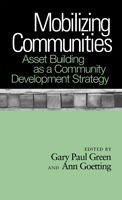

<body bgcolor="#FFFFFF" text="#000000" link="#0000FF" vlink="#CC0000" alink="#CC0000"><center><hr width="350" size="1" align="center" noshade>Case studies from a variety of settings consider the asset-building approach to community development<hr width="350" size="1" align="center" noshade><p><a href="https://cdcshoppingcart.uchicago.edu/Cart/ChicagoBook.aspx?ISBN=9781439900864&&PRESS=temple" target="_top">Buy this book!</a> | <a href="https://cdcshoppingcart.uchicago.edu/Cart/Cart.aspx?PRESS=temple" target="_top">View Cart</a> | <a href="https://cdcshoppingcart.uchicago.edu/Cart/Cart.aspx?PRESS=temple" target="_top">Check Out</a></p><p></p></center><!--none//--><h1>Mobilizing Communities</h1>
<H2>Asset Building as a Community Development Strategy</H2>
<h3>edited by Gary Paul Green and Ann Goetting</h3>
<P>cloth 1-4399-0086-8 $65.50, Mar 10, <FONT COLOR=#990033>Available</FONT>
<br>paper 1-4399-0087-6 $27.95, <FONT COLOR=#990033>Available</FONT>
<br>Electronic Book 1-4399-0088-4 $27.95 <FONT COLOR=#990033>Available</FONT>
<BR> 204 pp
5.5x8.25
</P><BLOCKQUOTE><I><p>&quot;Mobilizing Communities<em> is a collection of interesting case studies that are rich in detail about the process of community development in places such as Guatemala, Alabama, and West Chicago. What these wide-ranging places have in common is using assets as the basis for sustainable development. There are relatively few books containing case studies in community development and, in particular that focus on assets, which makes this book unique, new, and valuable to community development academics and practitioners.</em></I>&quot;&mdash;<b>John Gruidl</b>, Illinois Institute for Rural Affairs, Western Illinois University </p></I></BLOCKQUOTE>
<p>As communities face new social and economic challenges as well as political changes, the responsibilities for social services, housing needs, and welfare programs are being placed at the local government level. But can community-based organizations address these concerns effectively? The editors and contributors to <em>Mobilizing Communities</em> explore how these organizations are responding to these challenges, and how asset-based development efforts can be successful.
</p><p>
Asset-based development, rather than needs assessment, has become a new paradigm in the community development field over the last fifteen years. Although the approach is widely used by practitioners and promoted by foundations, asset-based development has not been examined critically by researchers until now.
</p><p>
<em>Mobilizing Communities</em> provides a conceptual framework and practical guidance to community development practitioners. The editors solicited case studies from a variety of geographic settings, regions and racial/ethnic groups. The communities in the case studies mobilize residents around different forms of community capital (e.g., financial, cultural, and environmental capital). The contributors examine the role of public participation, the organizational and institutional structure, relationships with governmental officials, and the outcomes and impacts of the asset-based development projects.</p>
<p><i>Contributors include: Lionel J. Beaulieu, Emily Blejwas, Sarah Dewees, Michael L. Dougherty, Mark H. Harvey, John P. Kretzmann, Roc�o Peralta, Rhonda Phillips, Deborah Puntenney, Stewart Sarkozy-Banoczy, Gordon Shockley, and the editors.</p></i>
<BR>&nbsp;<h2>Excerpt</h2><P>Excerpt available at <a href="http://www.temple.edu/tempress">www.temple.edu/tempress</a></p>
<BR>&nbsp;<h2>Reviews</h2>
<p><i>"</i>Mobilizing Communities<i> is an important book, and the role of assets and their re-organized ability to impact communities is a key topic in reinvigorating communities. The fact that the contributors are not only academics but individuals who also work in communities, makes this book both relevant and worthwhile. The contributors consider how communities integrate current assets into development, which has the potential to enhance a local communities development opportunities."</i> <br><b>&#151John C. Allen</b>, Associate Dean and Professor of Sociology, Utah State University
<p><i>"Green and Goetting begin </i>Mobilizing Communities<i> with an excellent overview of the strategies employed by needs-based and asset-based community development [ABCD] efforts.... Because Green and Goetting provide a comprehensive overview of the ABCD practice at the beginning of the book, very little prior community development knowledge is required in order to digest the contributed chapters.... [T]he bulk of the book is written in a way that should make it accessible to most audiences. In sum, Green and Goetting�s </i>Mobilizing Communities<i> is a welcome addition to the community development literature." </i><br>&#151<b><i>Journal of Urban Affairs</b></i>
<p><i> "Green and Goetting�s edited volume </i>Mobilizing Communities<i> is an effort to explain more comprehensively how communities can productively respond to such massive challenges.... What Green and Goetting and their contributors find in all of these contexts is that real communities, when faced with real problems and that maintain real assets, do not distinguish between 'problem-first' and 'assets-first' strategies.... Green and Goetting thus conclude: 'Our only hope is to build stronger and more resilient communities that can challenge these powerful political and economic forces."</i> <br>&#151<b><i>Perspectives on Politics</i></b>
<p><i>"</i>Mobilizing Communities<i> brackets seven chapters of case studies that illuminate the effectiveness and challenges of implementing an ABCD [asset-based community development] framework in varying cultural milieus with an opening overview of ABCD practices in general and a closing summary of lessons learned from the case studies.... A major strength of this book, then, is the way the theoretical capaciousness of the ABCD framework is closely coupled to and bears up under the in-depth analyses by researchers and practitioners in several real-world case studies of communities, programs, and organizations. The book successfully answers its own framing questions around the applicability of its framework in a number of contexts."</i> <br>&#151<b><i>Nonprofit and Voluntary Sector Quarterly</i></b>
<BR>&nbsp;<h2>Contents</h2><P>
<p>1. Community Assets: Building the Capacity for Development &#150; Gary Paul Green
<br>2. Investing in the Double Bottom Line: Growing Financial Institutions in Native Communities &#150; Sarah Dewees and
Stewart Sarkozy- Banoczy
<br>3. Asset- Based Community Development in Alabama�s Black Belt: Seven Strategies for Building a Diverse Community Movement &#150; Emily Blejwas
<br>4. The Politics of Protected Areas: Environmental Capital and Community Confl ict in Guatemala &#150; Michael L. Dougherty
and Roc�o Peralta
<br>5. Linking Cultural Capital Conceptions to Asset- Based Community Development &#150; Rhonda Phillips and Gordon Shockley
<br>6. Neighborhood Approaches to Asset Mobilization: Building Chicago�s West Side &#150; John P. Kretzmann and Deborah Puntenney
<br>7. Natural Amenities and Asset- Based Development in Rural Communities &#150; Gary Paul Green
<br>8. Implementing Community Development in the Mississippi Delta: The Effect of Organizations on Resident Participation &#150; Mark H. Harvey and Lionel J. Beaulieu
<br>9. Lessons Learned &#150; Gary Paul Green
<br>Contributors
<br>Index
</P><BR>&nbsp;<H2>About the Author(s)</H2>
<table><tr><td valign="top"><img src="/tempress/authors/2057_au1.gif" height="90" width="75"></td><td width="100%" valign="middle"><p><b>Gary Paul Green</b> is a Professor in the Department of Community and Environmental Sociology at the University of Wisconsin-Madison, and author, most recently, of <em>Workforce Development Networks in Rural Areas: Building the High Road</em>.</P></td></tr></table><table><tr><td valign="top"><img src="/tempress/authors/2057_au2.gif" height="90" width="75"></td><td width="100%" valign="middle"><p><b>Ann Goetting</b> is a Professor of Sociology at Western Kentucky University. She is the author or editor of three previous books, including (with Sarah Fenstermaker),<a href="1048_reg.html"><em> Individual Voices, Collective Visions: Fifty Years of Women in Sociology </em></a> and (with Michael Mayerfeld Bell) <a href="2157_reg.html"><em>The Strange Music of Social Life: A Dialogue on Dialogic Sociology</em></a> (both Temple).</P></td></tr></table>
<BR><H2>Subject Categories</H2>
<p><A HREF="/tempress/social.html" TARGET="_top">Community Organizing and Social Movements</a>
<BR><A HREF="/tempress/sociology.html" TARGET="_top">Sociology</a>
<BR><A HREF="/tempress/political.html" TARGET="_top">Political Science and Public Policy</a>
</p>
<p align="center"><a href="https://cdcshoppingcart.uchicago.edu/Cart/ChicagoBook.aspx?ISBN=9781439900864&&PRESS=temple" target="_top">Buy this book!</a> | <a href="https://cdcshoppingcart.uchicago.edu/Cart/Cart.aspx?PRESS=temple" target="_top">View Cart</a> | <a href="https://cdcshoppingcart.uchicago.edu/Cart/Cart.aspx?PRESS=temple" target="_top">Check Out</a></p><p><font face="Arial" size="1"><a href="copyright.html" onMouseOver="window.status='Web Copyright Policy';return true;" onMouseOut="window.status=''" title="Web Copyright Policy">&copy;</a> 2016 <a href="http://www.temple.edu" target="new" onMouseOver="window.status='Link to Temple University home page';return true;" onMouseOut="window.status=''" title="Link to Temple University home page">Temple University</a>. All Rights Reserved. http://www.temple.edu/tempress/titles/2057_reg.html</font></p>